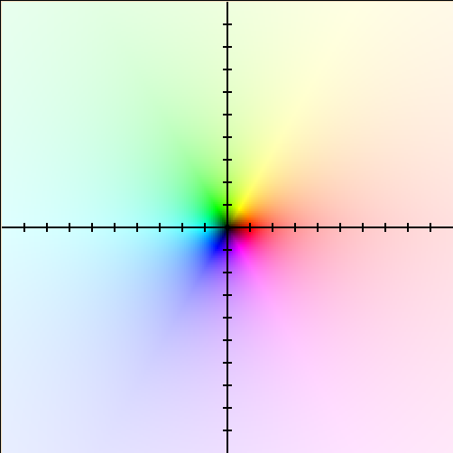

Singularidades, polos y ceros
Coloreado de dominio
Esto no es parte de la materia, pero lo utilizaremos para aclarar la teoría de puntos. Un diagrama de coloreado de dominio (utilicé ese para generar todas las imágenes) es un tipo de gráfica en dos dimensiones de una función en variable compleja. El tono representa la fase y la claridad la magnitud de los valores de la función. Se incluyen algunas gráficas para acostumbrar a la idea:
-
\(f(z) = z\)

-
\(f(z) = e^z\)

Puntos del dominio
Cada uno de los puntos del dominio de una función \(f(z)\) se pueden clasificar según si la función es analítica o no en ese punto. Sabemos que las series de Laurent se ven fuertemente afectadas por esta propiedad. Sea \(z_0\) un punto del dominio de \(f(z)\). Si desarrollamos una serie de Laurent para \(f(z)\) centrada en \(f(z_0)\), tenemos que:
-
Si \(f(z)\) es analítica en \(z = z_0\), \(z_0\) es un punto regular.
-
Equivalentemente, la parte principal de la serie será cero (\(c_n = 0\) para \(n < 0\)), lo cual quiere decir que será equivalente a una serie de Taylor iniciada en \(n = 0\).
\[\sum_{n = -\infty}^{\infty}{c_n(z - z_0)^n} = \sum_{n = -\infty}^{-1}{c_n(z - z_0)^n} + \sum_{n = 0}^{\infty}{c_n(z - z_0)^n} = \sum_{n = m}^{\infty}{c_n(z - z_0)^n}\]
-
Si \(f(z_0) = 0\), el punto regular es además un cero.
- El orden \(m\) del cero es la cantidad de coeficientes consecutivos al inicio de la serie de Taylor que se anulan.
-
Un punto regular que no es un cero se puede interpretar como un "cero de orden cero". Generalmente, el término "punto regular" se utiliza para ceros de orden cero y no para otros tipos de ceros, con tal de evitar confusiones.
-
Como la función es analítica en el punto regular, es infinitamente diferenciable en este punto. Un cero de orden \(m\) cumple que, \[f(z_0) = 0, f'(z_0) = 0, f''(z_0) = 0, ..., f^{(m - 1)}(z_0) = 0, f^{(m)}(z_0) \ne 0\]
-
-
Si \(f(z)\) no es analítica en \(z = z_0\), \(z_0\) es una singularidad.
-
Si los coeficientes de la parte principal se anulan consecutivamente hasta los últimos \(m\) términos, la singularidad es un polo de orden \(m\).
\[\sum_{n = -\infty}^{\infty}{c_n(z - z_0)^n} = \sum_{n = -\infty}^{-1}{c_n(z - z_0)^n} + \sum_{n = 0}^{\infty}{c_n(z - z_0)^n} = \sum_{n = -m}^{\infty}{c_n(z - z_0)^n}\]
-
Los polos aislados (es decir, no inmediatamente rodeados de otros polos) de orden finito son singularidades removibles. Esto quiere decir que podemos definir por partes a una variante de la función en donde se le asigna un valor a este punto particular que coincida con el límite de la función original.
\[\mathrm{Sa}(z) = \begin{cases}\frac{\sin(z)}{z}, &z \ne 0 \\1, & z = 0\end{cases}\]

-
Si el orden es infinito (los coeficientes de la parte principal tienen infinitos términos que no se anulan), el resultante "polo de infinito orden" se conoce como singularidad esencial. Las singularidades esenciales son "críticas" y no removibles, ya que el comportamiento alrededor de la singularidad cambia según la dirección.
-
Los puntos regulares también son "polos de orden cero", además de ser ceros de orden cero.
-
Un polo de orden \(m\) es también un cero de orden \(-m\) y viceversa.
-
\(f(z)\) es meromorfa si todas sus singularidades son removibles. En otras palabras, una función meromorfa se puede "arreglar" fácilmente para volverla holomorfa en todo \(\mathbb{C}\).
-
-
En el caso de funciones racionales, los órdenes de ceros y polos son sus multiplicidades. En la formulación siguiente, los ceros de \(N(z)\) son también los ceros de \(f(z)\), y los ceros de \(D(z)\) son los polos de \(f(z)\).
\[f(z) = \frac{N(z)}{D(z)} = A_0\frac{(z - z_{c1})^{m_{c1}}(z - z_{c2})^{m_{c2}}\cdots}{(z - z_{p1})^{m_{p1}}(z - z_{p2})^{m_{p2}}\cdots}\]
-
Pueden haber polos y ceros en \(z = \infty\), por lo que siempre hay que estudiar estos dos casos. Recordar la esfera de Riemann y su asociación con series de Taylor "invertidas" (exteriores de círculos).
-
A los polos y ceros de orden \(1\) o primer orden se les suele denominar simples.
Ejemplos
-
\(f(z) = 1 + 2z - 3z^2 = -3(z + \frac{1}{3})(z - 1)\) tiene ceros de orden \(1\) en \(z = -\frac{1}{3}\) y \(z = 1\). El resto de puntos del dominio son puntos regulares.
-
\(f(z) = z^{-1} = \frac{1}{z}\) tiene un polo de orden \(1\) en \(z = 0\). El resto de puntos son regulares.

-
\(f(z) = (z - j)^{-2}\) tiene un cero de orden \(-2\) en \(z = j\) y una singularidad esencial en \(z = \infty\).

-
\(f(z) = \frac{z + 1}{(z + j2)(z - 1)^3}\) tiene un cero de primer orden en \(z = -1\), una singularidad esencial en \(z = \infty\), un polo de primer orden en \(z = -j2\) y un polo de tercer orden en \(z = 1\).

-
\(f(z) = e^{1 / (z + 1)}\) tiene una singularidad esencial en \(z = -1\).
\[e^z = 1 + \frac{z^1}{1!} + \frac{z^2}{2!} + \cdots + \frac{z^n}{n!} + \cdots\] \[\implies e^{1 / (z + 1)} = 1 + \frac{(z + 1)^{-1}}{1!} + \frac{(z + 1)^{-2}}{2!} + \cdots + \frac{(z + 1)^{-n}}{n!} + \cdots\]

Residuos
Podemos expresar la sucesión de coeficientes de Laurent como \[\ldots, c_{-n}, \ldots, c_{-2}, c_{-1}, c_0, c_1, c_2, \ldots, c_n, \ldots\]
El coeficiente \(c_{-1}\)—el último de la parte principal—es especial y se conoce como el residuo de la serie asociada. Puede determinarse directamente a través del método del límite para separación en fracciones parciales: \[c_{-1} = \frac{1}{(m - 1)!}\lim_{z\to z_0}{\frac{\mathrm{d}^{m - 1}}{\mathrm{d}z^{m - 1}}(z - z_0)^m f(z)}\]
Donde \(m\) es el orden de polo del centro \(z_0\). Esta fórmula solo sirve para series centradas en polos y no singularidades esenciales. Nótese que el residuo es una propiedad de una serie y no de la función que sintetiza, por lo que cada posible expansión de una función tendrá su propio residuo.
En la siguiente sección estudiaremos algunas de las utilidades de los residuos.